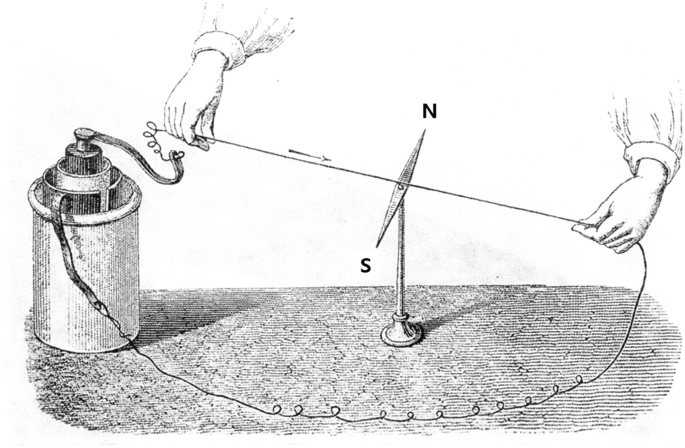
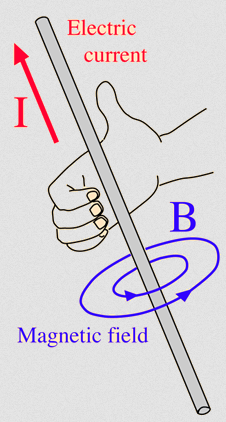
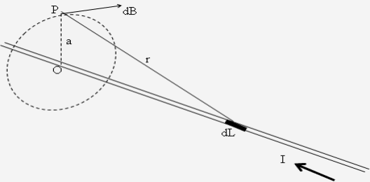
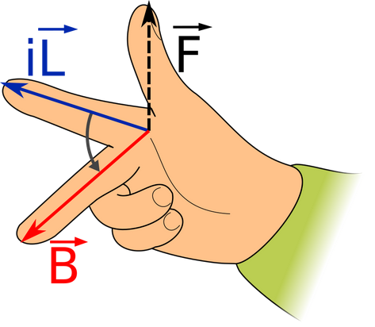
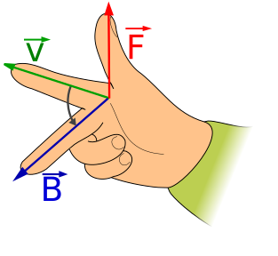
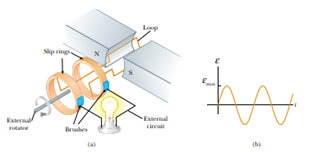
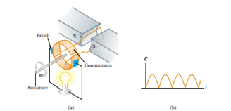

# Kemagnetan - Medan Magnet di Sekitar Kawat Berarus - Hukum Biot Savart, Hukum Ampere - Flux Magnet - Gaya Lorentz (Gaya Magnetik) - Induksi Elektromagnetik --- --- ### Medan Magnet di Sekitar Kawat Berarus - Orang pertama yang menemukan gejala kemagnetan adalah Hans Christian Oersted (1770 – 1851). Oersted menemukan suatu gejala bahwa jika sebuah magnet jarum ditempatkan di dekat kawat berarus listrik maka magnet jarum akan menyimpang. Untuk memahami yang ditemukan Oersted mari kita lakukan percobaan sebagai berikut: --- #### Medan Magnet di Sekitar Kawat Berarus <a href="https://javalab.org/en/oersteds_experiment_en/"></a> --- - Jika tidak ada arus, kompas hanya dipengaruhi oleh medan magnet bumi. - Setelah arus dialirkan, kompas akan menyimpang dari kedudukan semula. - Gejala ini dapat kita analisa sebagai berikut: kompas adalah sebuah magnet dan yang dapat menggerakkan magnet adalah medan magnet. - Medan magnat yang menggerakan magnet jarum tersebut tidak lain adalah medan magnet yang ditimbulkan kawat berarus listrik. - Ketika arah arus dibalik ternyata simpangan jarum kompas juga pada arah sebaliknya. --- - Dari uraian di atas dapat disimpulkan, bahwa **di sekitar kawat berarus listrik ada medan magnet**. - Medan magnet yang ditimbulkan oleh arus listrik dapat juga disebut **medan elektromagnet**. - Medan magnet dapat dilukiskan dengan garis-garis gaya magnet. Pola garis gaya magnet dapat ditunjukkan dengan percobaan sederhana yaitu dengan serbuk besi yang ditaburkan di atas kertas dan penghantar berbagai bentuk yang dialiri arus. --- #### Arah Induksi Magnetik Untuk mempermudah kita gunakan aturan genggaman tangan kanan sebagai berikut:  --- - Arah medan magnet *B* ditentukan dengan kaidah sekrup putar kanan atau tangan kanan. - Jika tangan kanan menggenggam kawat berarus listrik dengan arah ibu jari sama dengan arah arus maka arah lipatan jari-jari sama dengan arah garis gaya magnet. - Jika arah maju sekrup menyatakan arah arus,maka arah putar kanan sekrup sama dengan arah garis gaya magnet. --- - Arah induksi magnet di suatu titik merupakan garis singgung garis gaya magnet di titik tersebut (garis yang tegak lurus jari-jari). - Sering kali digunakan tanda (•) untuk menandai arah keluar bidang dan (⨂) untuk arah masuk bidang. --- ### Hukum Biot Savart  --- #### Hukum Biot Savart *Jika terdapat sebuah titik **P** berjarak **a** dari sebuah kawat berarus listrik **I**, kawat berarus itu terdiri atas bagian-bagian kecil kawat berarus yang disebut elemen arus (**dL**). Tiap elemen arus ini akan menimbulkan induksi magnet kecil (**dB**) yang disebabkan oleh elemen arus **dL**,sebanding dengan sinus sudut antara **r** dan **dL**, dan berbanding terbalik dengan kuadrat jarak **P** ke elemen arus **dL**. Dengan demikian didapatkan perumusan sebagai berikut:* --- ###### `$$dB=\frac{kIdL \sin\alpha}{r^2}$$` Keterangan: - *I* = kuat arus pada kawat (A) - *dL* = elemen panjang kawat (m) - *α* = sudut antara elemen arus dL dengan garis hubung P ke elemen kawat dL - *r* = jarak antara P dengan dL (m) - *k* = faktor pembanding (10<sup>−7</sup> Wb A<sup>−1</sup>m<sup>−1</sup>) - *dB* = Medan magnet di P yang disebabkan oleh elemen kawat dL (T) --- #### Hukum Biot Savart - Untuk menghilangkan faktor k pada rumus di atas, boleh dipakai konstanta baru μ<sub>0</sub> (permeabilitas ruang hampa) `$$k=\frac{\mu_0}{4\pi}$$` μ<sub>0</sub> = 4π × 10<sup>−7</sup> Wb A<sup>−1</sup>m<sup>−1</sup> sehingga ###### `$$dB=\frac{\mu_0 IdL \sin\alpha}{4\pi r^2}$$` --- *Medan magnet di sebuah titik **P** yang disebabkan oleh seluruh elemen arus di sepanjang **I** sama dengan jumlah vektor **dB** oleh elemen-elemen arus di sepanjang **I**. Secara matematis, hasil penjumlahan dB oleh masing-masing dL sepanjang **I**, diperoleh dengan integrasi **dB** sepanjang **I**.* `$$\begin{split} B &=\int dB\\ &=\frac{\mu_0}{4\pi}\int \frac{IdL \sin\alpha}{r^2}\end{split}$$` --- #### Medan magnet dB di titik P di sekitar kawat berarus - Vektor *dB* tegak lurus terhadap *dL* (= arah arus) dan terhadap vektor satuan *r* (arah menuju titik P) - Besar *dB* berbanding terbalik dengan kuadrat jarak P ke *dL* (r<sup>2</sup>) - Besar *dB* berbanding lurus dengan kuat arus *I* dan besar *dL* - Besar *dB* berbanding lurus terhadap *sin α*, di mana *α* adalah sudut antara *dL* dan vektor satuan *r* --- #### Medan magnet pada Kawat lurus dengan Panjang Tertentu ###### `$$B_P=\frac{\mu_0 I(\cos\alpha_1+\cos\alpha_2)}{4\pi a}$$` - *a* = jarak antara P dengan kawat (m) --- #### Medan magnet pada Kawat lurus dengan Panjang Tak Hingga ###### `$$B_P=\frac{\mu_0 I}{2\pi a}$$` --- #### Hukum Ampere *"Jumlah medan magnet di sekitar kawat berarus dalam lintasan tertutup sebanding dengan arus yang menyebabkannya"* ###### `$$\oint \mathbf{B}\cdot \mathrm{d}\mathbf{L}=\mu_0 I$$` --- #### Flux Magnet ###### `$$\mathbf{\Phi_B}=\int \mathbf{B}\cdot \mathrm{d}\mathbf{A}$$` #### Hukum Gauss tentang magnetisme *Fluks magnet dalam permukaan tertutup selalu sama dengan 0* ###### `$$\oint \mathrm{d}\mathbf{B}\cdot \mathrm{d}\mathbf{A}=0$$` --- #### Gaya Lorentz (Gaya Magnetik) *Sebuah kawat berarus atau sebuah muatan yang bergerak dengan kecepatan tetap yang berada dalam medan magnet akan mendapat gaya yang besarnya sebanding dengan **besar arus**, **panjang kawat** dan **besar medan magnet** tersebut. Gaya ini yang dinamakan dengan gaya Lorentz, dan secara matematis dapat dinyatakan:* ###### `$${\displaystyle \mathbf {F_L} =I{\boldsymbol {\ell }}\times \mathbf {B}}$$` ###### `$$F_L=IBL\sin\alpha$$` --- #### Gaya Lorentz (Gaya Magnetik) ###### `$${\displaystyle \mathbf {F_L} =q\,\mathbf {v} \times \mathbf {B}}$$` ###### `$$F_L=qvB\sin\alpha$$` Keterangan - *F<sub>L</sub>* = Gaya Lorentz (N) - *I* = Kuat arus (A) - *B* = Medan Magnet (T) - *α* = sudut antara *I* dan *B*, atau antara *v* dan *B* - *q* = muatan (C) - *v* = kecepatan (m/s) --- #### Arah Gaya Lorentz - Arah Gaya Lorentz dapat ditentukan menggunakan aturan telapak tangan kanan, yaitu ibu jari menyatakan arah Gaya Lorentz (*F<sub>L</sub>*), jari telunjuk menyatakan arah arus (*I*) atau arah kecepatan (*v*), jari tengah menyatakan arah medan magnet (*B*)  --- ### Induksi Elektromagnetik #### Hukum Faraday - Ggl induksi pada sebuah rangkaian berbanding lurus terhadap laju perubahan fluks magnet yang melaluinya ###### `$$\displaystyle {\mathcal {E}}=-{\frac {\mathrm {d} \Phi _{B}}{\mathrm {d} t}}$$` untuk sejumlah N lilitan ###### `$$\displaystyle {\mathcal {E}}=-N{\frac {\mathrm {d} \Phi _{B}}{\mathrm {d} t}}$$` --- #### Hukum Lenz - Arah (polaritas) GGL induksi sedemikian sehingga cenderung menghasilkan arus yang menimbulkan fluks magnet *berlawanan* dengan perubahan fluks magnet dalam rangkaian --- - Jika GGL disebabkan oleh gerakan suatu penghantar dalam medan magnet, arah arus induksinya adalah sedemikian rupa sehingga arah medan magnet pada penghantar berlawanan dengan arah geraknya. Jadi gerakan penghantar dilawan. - Jika GGL disebabkan oleh perubahan fluks yang melalui suatu rangkaian tertutup, arus menimbulkan medan magnet yang *berlawanan* dengan medan asal, jika fluksnya bertambah; dan *searah* dengan medan asal, jika fluksnya berkurang. --- #### Transformator `$$\displaystyle {\mathcal {E}_P}=-N_P{\frac {\mathrm {d} \Phi _{B}}{\mathrm {d} t}}$$` `$$\displaystyle {\mathcal {E}_S}=-N_S{\frac {\mathrm {d} \Phi _{B}}{\mathrm {d} t}}$$` ###### `$$\displaystyle {\frac{{\mathcal {E}_P}}{{\mathcal {E}_S}}=\frac{N_P}{N_S}}$$` --- Jika tidak ada energi yang hilang (transformator ideal) `$$\mathcal {E}_S I_S t=\mathcal {E}_P I_P t$$` `$$I_S=\frac{\mathcal {E}_P}{\mathcal {E}_S}I_P=\frac{N_P}{N_S}I_P$$` ###### `$$I_P:I_S=N_S:N_P$$` --- #### Efisiensi Transformator (Transformator tidak Ideal) - Efisiensi transformator didefinisikan sebagai daya keluaran dibagi dengan daya masukan `$$\eta=\frac{P_S}{P_P}$$` sehingga perbandingan arus untuk trafo tidak ideal ###### `$$\frac{I_P}{I_S}=\frac{N_S}{N_P}\frac{1}{\eta}$$` --- #### Generator dan Motor - Generator mengubah energi kinetik (mekanik) menjadi energi listrik, motor sebaliknya. - Jika sebuah generator dengan *N* lilitan dan luasan *A* berputar dalam medan magnet *B* dengan kecepatan sudut *ω*, fluks magnetik akan mengikuti persamaan ###### `$$\Phi _{B}=BA\cos{\omega t}$$` --- `$$\displaystyle {\mathcal {E}}=-N{\frac {\mathrm {d} \Phi _{B}}{\mathrm {d} t}}$$` ###### `$$\displaystyle {\mathcal {E}}=-NBA{\frac {\mathrm {d}}{\mathrm {d} t}}\cos{\omega t}=NBA\omega\sin{\omega t}$$` `$$\displaystyle {\mathcal {E}_{maks}}=NBA\omega$$` ---  ---  --- #### Induktansi diri - Perubahan kuat arus dalam suatu penghantar menyebabkan perubahan fluks magnet pada penghantar itu. Perubahan fluks magnet menyebabkan induksi elektromagnet (arus induksi). Ini disebut *induktansi diri*. ###### `$$\displaystyle {\mathcal {E}}=-L{\frac {\mathrm {d}I}{\mathrm {d} t}}$$` - *L* = koefisien induktansi diri (Henry=V.s/A)